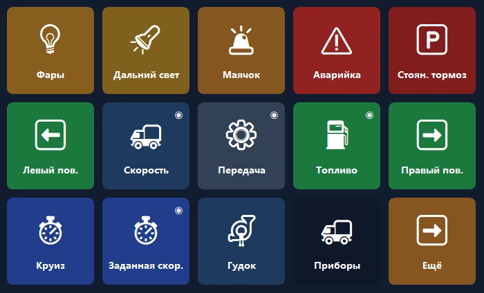
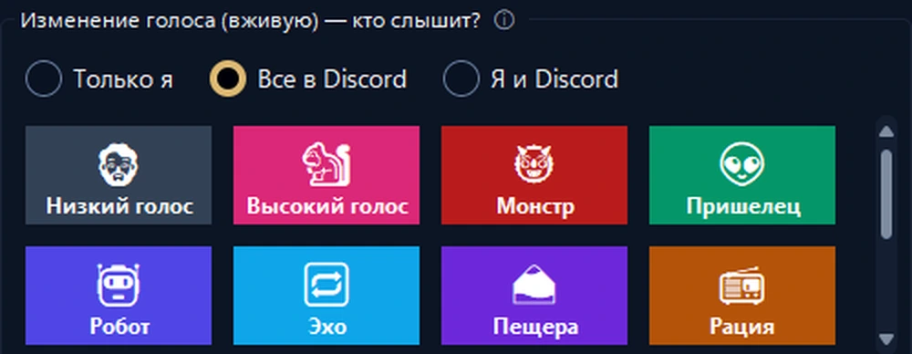
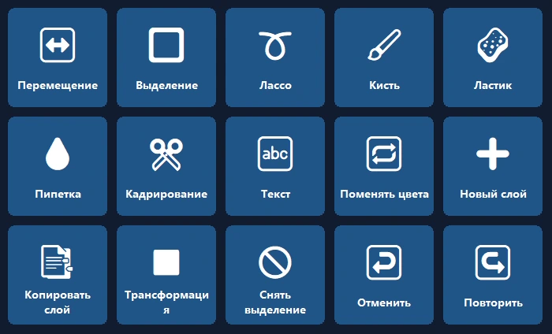
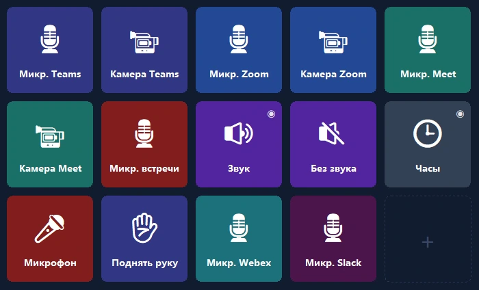

Ваш телефон — пульт управления ПК.
Сочетания клавиш в одно касание, OBS, Discord, Spotify и игровые панели. Через USB, Wi‑Fi или мобильный интернет, со сквозным шифрованием.
Приборная панель вашего грузовика теперь на телефоне.
Скорость, обороты, топливо и реалистичные контрольные лампы в реальном времени; управление грузовиком — в одно касание.
- 🚦Настоящая панельСкорость, ограничение, обороты, топливо и время прибытия; лампы загораются как в игре.
- 🕹Управление в одно касаниеФары, стояночный тормоз, круиз-контроль; посмотрите влево или вправо одним касанием.
- 📳Без настройкиПри запуске игры телефон предлагает готовую панель и каждый раз сам на неё переключается.

Ведите стрим одной рукой.
Ваш телефон вместо дорогого устройства: OBS, звуковые эффекты, Discord и музыка на одном экране.
- 🎬Управление OBSСцены, запись и трансляция, таймеры прямо на кнопке.
- 📳Звуковая панель и музыкаПроигрывайте готовые звуки, управляйте Spotify и громкостью каждого приложения на одном экране.
- 🎙Голосовая студияЕстественные женский, мужской и детский голоса или ваш собственный; выключите микрофон для Discord одним касанием.


Откройте программу — панель уже готова.
Панели на основе официальных сочетаний клавиш Photoshop, Premiere Pro, After Effects, Illustrator, DaVinci Resolve, Blender, Figma и VS Code.
- ✨Без настройкиКогда программа выходит на передний план, телефон предлагает её панель и затем сам на неё переключается (Pro).
- ⌨Правильные сочетанияИнструменты, слои, отмена, маркеры — со стандартными сочетаниями каждой программы.
Микрофон в одном касании.
Выключайте микрофон в Teams, Zoom, Meet, Webex и Slack без настройки сочетаний клавиш, даже когда окно встречи в фоне.
- 🎙Только эта программаWindows выключает микрофон только у программы для встреч; другие программы не затрагиваются.
- 🔴Состояние всегда видноПока микрофон выключен, индикатор кнопки горит красным; есть и в бесплатной версии.

Самый удобный экран на вашем столе.
Начните за минуту с готовой раскладки; настоящие логотипы ваших программ появятся сами.
Второй экран
Смотрите экран ПК на телефоне и используйте его как сенсорную мышь и клавиатуру.
Громкость приложений
Громкость каждой программы отдельно; наушники ↔ динамики одним касанием.
Умные страницы
Страницы следуют за активной программой; таймеры, папки и многошаговые действия.
Подключение откуда угодно
Общий Wi‑Fi не нужен: работает и через мобильный интернет, и с несколькими ПК.
Зашифрованная облачная копия
Раскладка сохраняется в зашифрованном виде без учётной записи и возвращается на новом ПК.
Конфиденциальность
Без учётной записи, рекламы и слежки. Кнопки остаются на ваших устройствах.
Настройка за минуту.
Установите программу
Скачайте бесплатный PanelDeck для Windows и откройте его.
Отсканируйте QR-код
Приложение на телефоне подключается по QR-коду за секунды.
Нажимайте
Выберите готовую раскладку или создайте свои кнопки.
Заплатите один раз — пользуйтесь всегда.
Без подписки, рекламы и слежки. Все обновления включены. Google Play показывает местную цену для вашей страны.
Бесплатно
- Подключение через USB, Wi‑Fi и мобильный интернет
- 6 кнопок на первой странице
- Сочетания клавиш, медиа, запуск программ, Discord, таймер
PanelDeck Pro
Цена при запуске; затем 6,99 $. 7 дней бесплатно.
- 6 вкладок, неограниченно папок и кнопок
- Второй экран, ползунки громкости, живая информация
- Панель грузовика, Голосовая студия, панели при открытии программы
- Зашифрованная облачная копия
Полезно знать
Нужна ли учётная запись?
Нет. PanelDeck не просит учётную запись; ваши кнопки остаются на ваших устройствах.
Работает ли вне дома?
Да. Без общего Wi‑Fi телефон подключается через мобильный интернет со сквозным шифрованием.
С какими играми работает?
Euro Truck Simulator 2 и American Truck Simulator поддерживаются полностью. Живые панели для гоночных и авиасимуляторов — в бета-версии.
Есть ли версия для iPhone?
Пока только Android. Версия для iPhone и iPad есть в планах.
Что делать, если Windows пишет «Система Windows защитила ваш компьютер»?
Нажмите «Подробнее» → «Выполнить в любом случае». Подробности в руководстве по установке.
Настройте свою панель сегодня.
Начните бесплатно и переходите на Pro, когда захотите.
⬇ Скачать для Windows бесплатно